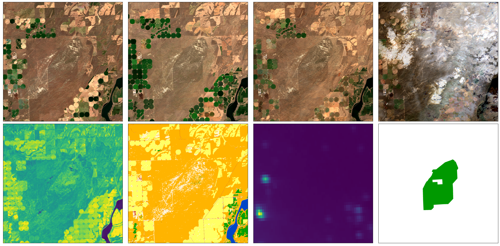

News
Description
MapInWild is a multi-modal dataset and comprises various geodata acquired and formed from different RS sensors. The dataset consists of 8144 images with the shape of 1920 × 1920 pixels and is of approximately 350 GB in size. The images are weakly annotated with three classes derived from the World Database of Protected Areas – Strict Nature Reserves, Wilderness Areas, and National Parks. With MapInWild, on the purpose of deepening our understanding of what makes nature wild, we embark on the complications induced by the ambiguity of the term wilderness and study the vagueness in nature and propose our dataset as a test-bed for machine learning research concerning environmental remote sensing. We are convinced that getting closer to understanding the concept of wilderness is of great value to the community to further bridge the gap between deep learning applied to environmental remote sensing and conservation.
MapInWild dataset along with the codes is publicly available at Harvard Database. -->
A Sample from MapInWild Dataset
Citation
If you make use of the MapInWild dataset, please cite our following paper:
@inproceedings{waqas2019isaid,
title={MapInWild: A Remote Sensing Dataset to Answer the Question What Makes Nature Wild},
author={Burak Ekim, Timo T. Stomberg, Ribana Roscher, Michael Schmitt},
booktitle={xxx},
pages={xx-xx},
year={2022}
}
Contact
If you encounter any problem in using MapInWild or have any feedback, please contact
- Burak Ekim at burak.ekim@unibw.de,